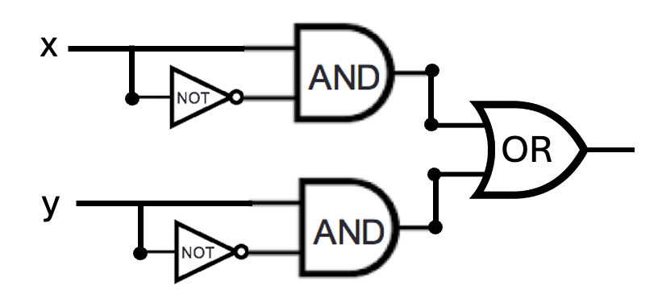
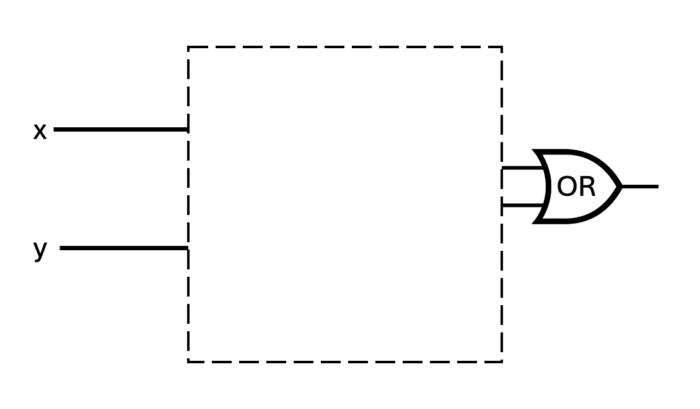
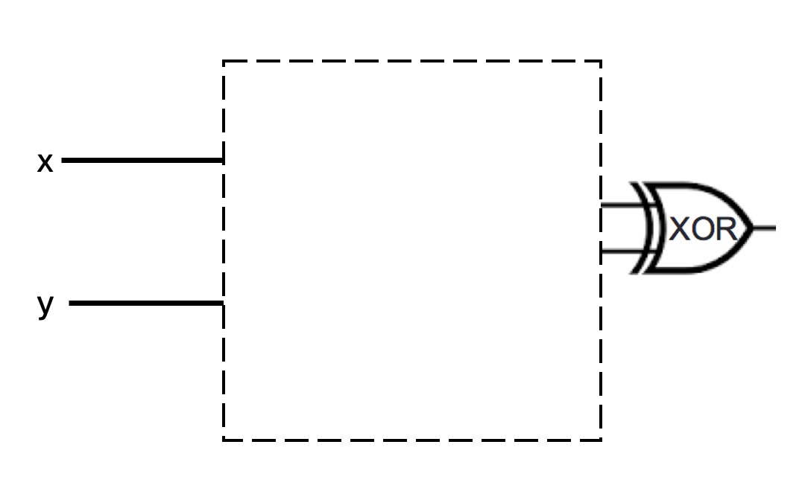

Due: 10/06/26 at 5pm (no penalty late submission until 8am next morning)Due: 10/20/26 at 5pm (no penalty late submission until 8am next morning)Due: 11/03/26 at 5pm (late submission until 8am next morning)
In this assignment,
You will practice reading and applying definitions to get comfortable working with mathematical language.
Relevant class material: Week 0 and 1.
You will submit this assignment via Gradescope (https://www.gradescope.com) in the assignment called “hw1-definitions-and-notation”.
For all HW assignments: These homework assignments must be done in groups of three students. Please ensure your name(s) and TSN(s) are clearly visible on the first page of your homework submission, start each question on a new page, and upload the PDF to Gradescope. If you’re working in a group, submit only one submission per group: one partner uploads the submission through their Gradescope account and then adds the other group members to the Gradescope submission by selecting their name(s) in the “Add Group Members” dialog box. You will need to re-add your group member(s) every time you resubmit a new version of your assignment.
All submitted homework for this class must be typed. You can use a word processing editor if you like (Microsoft Word, Open Office, Notepad, Vim, Google Docs, etc.) but you might find it useful to take this opportunity to learn LaTeX. LaTeX is a markup language used widely in computer science and mathematics. The homework assignments are typed using LaTeX and you can use the source files as templates for typesetting your solutions.
After you submit the PDF of the homework, you will meet with a TA for a Homework Q&A session. This session is a primary component of your homework score. All group members must be present and able to fully participate in discussions of each question.
Integrity reminders
Problems should be solved together, not divided up between the partners. The homework is designed to give you practice with the main concepts and techniques of the course, while getting to know and learn from your classmates.
Use only resources explicitly allowed for each assignment. Resources not affiliated with this quarter’s version of the class may use inconsistent notation or definitions. When consulting resources, balance getting the help you need while also protecting the learning experience you will have when the ‘aha’ moments of solving the problem authentically happen.
Do not share written solutions or partial solutions for homework with other students in the class who are not in your group. Doing so would dilute their learning experience and detract from their success in the class.
When discussing your homework solutions, you should be prepared to describe
The key ideas that establish the correctness of any final answers.
What evidence demonstrates the soundness of your results and methods.
What would need to change in the solution to solve a similar but different question.
A rule of thumb for the level of detail to include is to imagine someone who is taking the class alongside you but missed about a week’s worth of content: does your writeup have enough detail for them to learn from it?
To demonstrate your honest effort in answering homework questions, we expect you to include your attempt to answer *each* part of the question. If you get stuck with your attempt, you can still demonstrate your effort by explaining where you got stuck and what you did to try to get unstuck (e.g. reviewing annotated notes from class, checking the relevant textbook sections, looking up comparable questions on the relevant weekly review quizzes, asking questions on Piazza, attending (instructor/TA/tutor) office hours, consulting generative AI tools, etc.).
Assigned questions
Modeling
In class, we used \(4\)-tuples to represent the user ratings for four movies. This representation is memory-efficient because we use the order of the components in the \(4\)-tuples to represent which move is being rated. However, it is not easily extended when we want to add new movies to the database. Define a new model that would allow us to represent the user ratings of movie databases where we allow for new movies to be added. Use only the data types we have talked about in class: sets, \(n\)-tuples, and strings. Explain the design choices that you used to define your model by referencing properties of the data-type(s) you choose. Demonstrate your model by showing how the rating of the user who dislikes Superman, Wicked and likes KPop Demon Hunters, A Minecraft Movie is represented.
Colors can be described as amounts of red, green, and blue mixed together 1 Mathematically, a color can be represented as a \(3\)-tuple \((r, g, b)\) where \(r\) represents the red component, \(g\) the green component, \(b\) the blue component and where each of \(r\), \(g\), \(b\) must be a value from this collection of numbers:
\(\{\)0, 1, 2, 3, 4, 5, 6, 7, 8, 9, 10, 11, 12, 13, 14, 15, 16, 17, 18, 19, 20, 21, 22, 23, 24, 25, 26, 27, 28, 29, 30, 31, 32, 33, 34, 35, 36, 37, 38, 39, 40, 41, 42, 43, 44, 45, 46, 47, 48, 49, 50, 51, 52, 53, 54, 55, 56, 57, 58, 59, 60, 61, 62, 63, 64, 65, 66, 67, 68, 69, 70, 71, 72, 73, 74, 75, 76, 77, 78, 79, 80, 81, 82, 83, 84, 85, 86, 87, 88, 89, 90, 91, 92, 93, 94, 95, 96, 97, 98, 99, 100, 101, 102, 103, 104, 105, 106, 107, 108, 109, 110, 111, 112, 113, 114, 115, 116, 117, 118, 119, 120, 121, 122, 123, 124, 125, 126, 127, 128, 129, 130, 131, 132, 133, 134, 135, 136, 137, 138, 139, 140, 141, 142, 143, 144, 145, 146, 147, 148, 149, 150, 151, 152, 153, 154, 155, 156, 157, 158, 159, 160, 161, 162, 163, 164, 165, 166, 167, 168, 169, 170, 171, 172, 173, 174, 175, 176, 177, 178, 179, 180, 181, 182, 183, 184, 185, 186, 187, 188, 189, 190, 191, 192, 193, 194, 195, 196, 197, 198, 199, 200, 201, 202, 203, 204, 205, 206, 207, 208, 209, 210, 211, 212, 213, 214, 215, 216, 217, 218, 219, 220, 221, 222, 223, 224, 225, 226, 227, 228, 229, 230, 231, 232, 233, 234, 235, 236, 237, 238, 239, 240, 241, 242, 243, 244, 245, 246, 247, 248, 249, 250, 251, 252, 253, 254, 255\(\}\)
(This is the same definition as in the Week 1 Review quiz.)
Can you find two different \(3\)-tuples that represent colors that are indistinguishable to your eye? You can use the website in the footnote to play around with different choices of red, green, and blue levels to see if you can distinguish between the resulting colors. Why or why not?
A complete answer will include the specific example \(3\)-tuples that work, along with a description of the colors that they represent and why they are indistinguishable, or an explanation of why there can’t be such an example.
Sets and functions
Each of the sets below is described using set builder notation or recursion or as a result of set operations applied to other known sets. Rewrite each of the sets using the roster method.
Remember our discussions of data-types: use clear notation that is consistent with our class notes and definitions to communicate the data-types of the elements in each set.
Sample response that can be used as reference for the detail expected in your answer:
The set \(\{ \texttt{A}\} \circ \{ \texttt{A}\texttt{U}, \texttt{A}\texttt{C}, \texttt{A}\texttt{G}\}\) can be written using the roster method as \[\{ \texttt{A}\texttt{A}\texttt{U}, \texttt{A}\texttt{A}\texttt{C}, \texttt{A}\texttt{A}\texttt{G}\}\] because set-wise concatenation gives a set whose elements are all possible results of concatenating an element of the left set with an element of the right set. Since the left set in this example only has one element, namely \(\texttt{A}\), each of the elements of the set we described starts with \(\texttt{A}\). There are three elements of this set, one for each of the distinct elements of the right set.
\[\{ n \in \mathbb{Z}^+ \mid n \leq 3 \} \times \{ m \in \mathbb{N} \mid m \leq 3\}\]
The set \(X\) defined recursively as \[\begin{array}{ll} \textrm{Basis Step: } & 1 \in X, 3 \in X, 5 \in X \\ \textrm{Recursive Step: } & \textrm{If the integer } n \in X \textrm{, then the result of multiplying } n \textrm{ by } -1 \textrm{ is in }X \end{array}\]
\[\{ x \in S \mid rnalen(x) = 2 \} \circ \{x \in S \mid rnalen(x) = 0 \}\] where \(S\) is the set of RNA strands and \(rnalen\) is the recursively defined function that we discussed in class, \[\begin{array}{llll} & & \textit{rnalen} : S & \to \mathbb{Z}^+ \\ \textrm{Basis Step:} & \textrm{If } b \in B\textrm{ then } & \textit{rnalen}(b) & = 1 \\ \textrm{Recursive Step:} & \textrm{If } s \in S\textrm{ and }b \in B\textrm{, then } & \textit{rnalen}(sb) & = 1 + \textit{rnalen}(s) \end{array}\]
\[\{ (r,g,b) \in C \mid r+g+b = 2 \textrm{ and } g=1\}\] where \(C = \{ (r,g,b) \mid 0 \leq r \leq 255, 0 \leq g \leq 255, 0 \leq b \leq 255, r \in \mathbb{N}, g \in \mathbb{N}, b \in \mathbb{N} \}\).
Recall the function which takes an ordered pair of ratings \(4\)-tuples and returns a measure of the difference between them \[d_0: \{-1,0,1\}^4 \times \{-1,0,1\}^4 \to \mathbb{R}\] given by \[d_0 (~(~ (x_1, x_2, x_3, x_4), (y_1, y_2, y_3, y_4) ~) ~) = \sqrt{ (x_1 - y_1)^2 + (x_2 - y_2)^2 + (x_3 -y_3)^2 + (x_4 -y_4)^2}\]
Define a new function which we’ll call \(d_{new}\) with the same domain \(\{-1,0,1\}^4 \times \{-1,0,1\}^4\) and codomain \(\mathbb{R}\) but where there is some example pair of ratings \(4\)-tuples \[(~ (x_1, x_2, x_3, x_4), (y_1, y_2, y_3, y_4)~)\] where \[d_0 (~(~ (x_1, x_2, x_3, x_4), (y_1, y_2, y_3, y_4) ~) ~) \neq d_{new} (~(~ (x_1, x_2, x_3, x_4), (y_1, y_2, y_3, y_4) ~) ~)\]
Your answer should include both a precise and clear definition for the rule defining \(d_{new}\) which unambiguously specifies output for each input of the function and the example ordered pair of ratings \(4\)-tuples that demonstrate that the functions are not equal. Also include a justification of your answers with (clear, correct, complete) calculations for each of the function applications and/or references to definitions and connecting them with the desired conclusion.
A function basecount that computes the number of a given base \(b\) appearing in a RNA strand \(s\) is defined recursively:
\[\begin{array}{llll} & \textit{basecount} : S \times B & \to \mathbb{N} &\\ \textrm{Basis Step:} & \\ \textrm{If } b_1 \in B, b_2 \in B & \textit{basecount}(~(b_1, b_2)~) & = \begin{cases} 1 & \textrm{when } b_1 = b_2 \\ 0 & \textrm{when } b_1 \neq b_2 \\ \end{cases}& \\ \textrm{Recursive Step:} & \\ \textrm{If } s \in S, b_1 \in B, b_2 \in B &\textit{basecount}(~(s b_1, b_2)~) & = \begin{cases} 1 + \textit{basecount}(~(s, b_2)~) & \textrm{when } b_1 = b_2 \\ \textit{basecount}(~(s, b_2)~) & \textrm{when } b_1 \neq b_2 \\ \end{cases} & \end{array}\] Consider the function application \[basecount( ~(\texttt{A}\texttt{C}\texttt{A}\texttt{U}, \texttt{A})~)\] What is the input? What is the output? Give an example of a different choice of input that gives the same output.
Your answer should include clearly labeled answers to each of the three parts of the question, along with a justification for the values of the applications that makes specific reference to the parts of the recursive definition of the \(basecount\) function used to calculate it.
In this assignment,
You will practice applying functions and tracing algorithms in multiple contexts, and exploring properties of positional number representations.
Relevant class material: Week 2 and Week 3.
You will submit this assignment via Gradescope (https://www.gradescope.com) in the assignment called “hw2-numbers”.
For all HW assignments: These homework assignments must be done in groups of three students. Please ensure your name(s) and TSN(s) are clearly visible on the first page of your homework submission, start each question on a new page, and upload the PDF to Gradescope. If you’re working in a group, submit only one submission per group: one partner uploads the submission through their Gradescope account and then adds the other group members to the Gradescope submission by selecting their name(s) in the “Add Group Members” dialog box. You will need to re-add your group member(s) every time you resubmit a new version of your assignment.
All submitted homework for this class must be typed. You can use a word processing editor if you like (Microsoft Word, Open Office, Notepad, Vim, Google Docs, etc.) but you might find it useful to take this opportunity to learn LaTeX. LaTeX is a markup language used widely in computer science and mathematics. The homework assignments are typed using LaTeX and you can use the source files as templates for typesetting your solutions.
After you submit the PDF of the homework, you will meet with a TA for a Homework Q&A session. This session is a primary component of your homework score. All group members must be present and able to fully participate in discussions of each question.
Integrity reminders
Problems should be solved together, not divided up between the partners. The homework is designed to give you practice with the main concepts and techniques of the course, while getting to know and learn from your classmates.
Use only resources explicitly allowed for each assignment. Resources not affiliated with this quarter’s version of the class may use inconsistent notation or definitions. When consulting resources, balance getting the help you need while also protecting the learning experience you will have when the ‘aha’ moments of solving the problem authentically happen.
Do not share written solutions or partial solutions for homework with other students in the class who are not in your group. Doing so would dilute their learning experience and detract from their success in the class.
When discussing your homework solutions, you should be prepared to describe
The key ideas that establish the correctness of any final answers.
What evidence demonstrates the soundness of your results and methods.
What would need to change in the solution to solve a similar but different question.
A rule of thumb for the level of detail to include is to imagine someone who is taking the class alongside you but missed about a week’s worth of content: does your writeup have enough detail for them to learn from it?
To demonstrate your honest effort in answering homework questions, we expect you to include your attempt to answer *each* part of the question. If you get stuck with your attempt, you can still demonstrate your effort by explaining where you got stuck and what you did to try to get unstuck (e.g. reviewing annotated notes from class, checking the relevant textbook sections, looking up comparable questions on the relevant weekly review quizzes, asking questions on Piazza, attending (instructor/TA/tutor) office hours, consulting generative AI tools, etc.).
Assigned questions
Functions and algorithms: in this question you’ll explore the properties of the (integer) power and logarithm functions. We’ll use some definitions we introduced in class and review quiz. In particular, recall the function \[b^i\] with domain \(\mathbb{Z}^+ \times \mathbb{N}\) and codomain \(\mathbb{N}\) defined recursively by \[\begin{align*} &\textrm{Basis Step: } b^0 = 1 \\ &\textrm{Recursive Step: } \textrm{If } i \in \mathbb{N}, b^{i+1} = b \cdot b^i \end{align*}\] Also, recall the algorithm \(logb\) given by the pseudocode below
procedure \(logb\)(\(b\),\(n\): positive integers with \(b > 1\)) \(i\) := \(0\) while \(n\) > \(b-1\) \(i\) := \(i + 1\) \(n\) := \(n\) div \(b\) return \(i\) \(\{ i\) holds the integer part of the base \(b\) logarithm of \(n\}\)
Choose a positive integer \(b\) between \(3\) and \(6\) (inclusive) and choose a nonnegative integer \(i\) between \(2\) and \(5\) (inclusive). Demonstrate how to calculate the result of the \(logb\) algorithm (procedure) when its input is the base \(b\) you chose and \(n = b^i\) (for the \(i\) you choose.) A complete answer will include the specific choice of \(b\) and \(i\), along with trace of the calculations of \(b^i\) and the computation of the algorithm, including (clear, correct, complete) calculations for each of the function applications and/or references to definitions and a trace table for algorithm that includes the values of all relevant variables at each iteration (See the annotated Week 2 notes and the review quiz for the level of detail expected in a trace of a function application and a trace table).
Now we’ll go in the other direction: Demonstrate how to calculate the result of \(7^y\) where \(y\) is the result of the \(logb\) algorithm (procedure) when its input is \(b=7\) and \(n=30\). A complete answer will include clearly labelled traces of the calculations of \(b^i\) and the computation of the algorithm, including (clear, correct, complete) calculations for each of the function applications and/or references to definitions and a trace table for algorithm that includes the values of all relevant variables at each iteration (See the annotated Week 2 notes for the level of detail expected in a trace of a function application and a trace table).
Logarithms and powers are supposed to “undo" one another. Explain whether your work in parts (a) and (b) supports that idea, whether you saw anything confusing or surprising about these calculations, and how to explain what you saw.
Base expansions
Pick an integer between \(50\) and \(1000\) (inclusive) that you (or one of your group members) came across at some point this week. In a sentence or two, give some context for why you’re choosing this number). Write the base expansion of your chosen number in base \(2\) (binary), base \(3\) (ternary), base \(4\), and base \(16\) (hexadecimal).
What is the smallest width \(w\) in which they could write your chosen number in base \(8\) (octal) fixed-width \(w\)? Justify your answer with reference to the definitions of fixed-width expansions and relevant calculations.
Express in roster method the set of numbers between \(1\) and \(2\) (exclusive) that be written without error (full precision) in binary fixed width expansion with integer part width \(3\) and fractional part width \(2\). Justify your answer with reference to the definitions of fixed-width expansions and relevant calculations.
Consider the strings of \(1\)s that have length \(3\), \(5\), \(7\), and \(10\). Calculate the numbers
2
\([111]_{s,3}\)
\([11111]_{s,5}\)
\([1111111]_{s,7}\)
\([1111111111]_{s,10}\)
\([111]_{2c,3}\)
\([11111]_{2c,5}\)
\([1111111]_{2c,7}\)
\([1111111111]_{2c,10}\)
Justify your answers with specific reference to the definitions of sign-magnitude and \(2\)s complement expansions and relevant calculations and discuss any patterns you notice.
Multiple representations
Recall that, mathematically, a color can be represented as a \(3\)-tuple \((r, g, b)\) where \(r\) represents the red component, \(g\) the green component, \(b\) the blue component and where each of \(r\), \(g\), \(b\) must be from the collection \(\{x \in \mathbb{N}\mid 0 \leq x \leq 255 \}\). As an alternative representation, in this assignment we’ll use base \(b\) fixed-width expansions to represent colors as individual numbers (this definition was introduced in a recent Review quiz question).
Definition: A hex color is a nonnegative integer, \(n\), that has a base \(16\) fixed-width \(6\) expansion \[n = (r_1r_2g_1g_2b_1b_2)_{16,6}\] where \((r_1r_2)_{16,2}\) is the red component, \((g_1g_2)_{16,2}\) is the green component, and \((b_1b_2)_{16,2}\) is the blue.
For this question, let’s call the set of hex colors \(HC\). In the Week 2 Review quiz, we explored a few different set builder definitions for \(HC\).
Rewrite the set builder definition of a set below so that it refers to colors rather than numbers: \(\{ c \in HC \mid c \mod 256 = 0\}\). A complete answer will justify the new set builder definition by connection with the definition of hex colors and how it impacts the colors that satisfy the specific property for this set.
Rewrite the set builder definition of a set below so that it refers to colors rather than numbers: \(\{ c \in HC \mid c < 65536\}\). A complete answer will justify the new set builder definition by connection with the definition of hex colors and how it impacts the colors that satisfy the specific property for this set.
In art, we can mix two colors to get a new color. For example, red and blue make purple, blue and yellow make green, red and yellow make orange. A mathematical definition of hex color mixing would be a function with domain \(HC \times HC\) and codomain \(HC\) where the result of applying this function to an input \((n_1, n_2)\) is the hex color that results from mixing the hex colors \(n_1\) and \(n_2\).
Sample work for a related question that can be used as reference for the detail expected in your answer: Consider the attempted mathematical definition \(f_1: HC\times HC \to HC\) given by \[f_1 (~(n_1, n_2) ~) = n_1 + n_2\] We will show that this function is not well-defined so it cannot give a hex color mixing definition. The reason it is not well-defined is that the application of the rule sometimes gives values that are not in the stated codomain. To see this, we need an example input to \(f_1\) for which the output of the rule is not in \(HC\). Here is one such example: \((n_1, n_2) = (~(FFFFFF)_{16,6}, (FFFFFF)_{16,6}~)\). This example is in \(HC \times HC\) because \((FFFFFF)_{16,6}\) is a nonnegative integer that has a base \(16\) fixed-width \(6\) expansion so it is a hex color. We now apply the definition of the rule in \(f_1\): \[\begin{align*} f_1 (~(n_1, n_2) ~) &= f_1 ( (~(FFFFFF)_{16,6}, (FFFFFF)_{16,6}~) ) = (FFFFFF)_{16,6} + (FFFFFF)_{16,6} \\ &= 2 \left( 15\cdot 16^5 + 15\cdot 16^4 + 15 \cdot 16^3 + 15 \cdot 16^2 + 15 \cdot 16^1 + 15 \cdot 16^0 \right) \\ &= 2 \cdot 15 \cdot (1048576 + 65536 + 4096 + 256 + 16 + 1) = 2 \cdot 15 \cdot 1118481 = 33554430 \end{align*}\] This is not a hex color because it is greater than or equal to \(16^6 = 16777216\), so (using the Week 2 notes on which numbers can be represented with fixed-width expansions) it does not have a hexadecimal fixed width \(6\) expansion.
In this question, we’ll look at another attempted mathematical definition for hex color mixing. We define \(f_2: HC\times HC \to HC\) given by \[f_2 (~(n_1, n_2) ~) = (n_1 + n_2) \textbf{ div } 2\]
This is a well-defined function. You do not need to prove this or hand it in, but it’s good practice to make sure you understand why it’s well-defined. Notice that the function application \[f_2 ( ~(~ (FF0000)_{16,6} , (FFFE00)_{16,6} ~)~)\] can be calculated as: \[\begin{align*} f_2&(((FF0000)_{16,6}, (FFFE00)_{16,6}))= ((FF0000)_{16,6} + (FFFE00)_{16,6})) \textbf{ div } 2\\ &= \big(~ \left(15\cdot16^5 + 15\cdot16^4 + 0\cdot16^3 + 0\cdot16^2 + 0\cdot16^1 + 0\cdot16^0 \right) \\ &~~~~+~ \left((15\cdot16^5 + 15\cdot16^4 + 15\cdot16^3 + 14\cdot16^2 + 0\cdot16^1 + 0\cdot16^0\right )~\big )\textbf{ div } 2\\ &= (16711680 + 16776704) \textbf{ div } 2 = 33488384 \textbf{ div } 2 = 16744192 \end{align*}\] Since this is less than \(16^6 = 16777216\), we can represent it using base \(16\) fixed-width \(6\):. \[(16744192)_{10} = 15\cdot16^5 + 15\cdot16^4 + 7\cdot16^3 + 15\cdot16^2 + 0\cdot16^1 + 0\cdot16^0 = (FF7F00)_{16,6}\]
Using the web tool https://www.w3schools.com/colors/colors_rgb.asp, we can verify that \((FF0000)_{16,6}\) is red, \((FFFE00)_{16,6}\) is yellow, and \((FF7F00)_{16,6}\) is orange.
Show that \(f_2\) does not work as a hex color mixing definition by finding another ordered pair of hex colors for which the result of applying \(f_2\) does not give the expected hex color. Include the numerical description of each colors you mention, alongside a description of them in English. Describe how you know what these colors are (if you use a web color tool, include its URL in your submission writeup; if not, describe your reasoning). Justify your example with (clear, correct, complete) calculations and/or references to definitions, and connecting them with the desired conclusion.
Fixed-width addition.
Choose example width \(5\) first summand and width \(5\) second summand so that in the binary fixed-width addition (adding one bit at time, using the usual column-by-column and carry arithmetic, and ignoring the carry from the leftmost column), the example satisfies all three conditions below simultaneously
When interpreting each of the summands and the result in binary fixed-width 5, the result represents the actual value of the sum of the summands and
when interpreting each of the summands and the sum in sign-magnitude width 5, the result represents the actual value of the sum of the summands and
when interpreting each of the summands and the sum in 2s complement width 5, the result represents the actual value of the sum of the summands.
Choose an example width \(5\) first summand and second summand so that in the binary fixed-width addition (adding one bit at time, using the usual column-by-column and carry arithmetic, and ignoring the carry from the leftmost column), the example satisfies all three conditions below simultaneously
When interpreting each of the summands and the result in binary fixed-width 5, the result does not represent the actual value of the sum of the summands and
when interpreting each of the summands and the sum in sign-magnitude width 5, the result does not represents the actual value of the sum of the summands and
when interpreting each of the summands and the sum in 2s complement width 5, the result represents the actual value of the sum of the summands.
A complete solution will clearly specify each summand and the result of binary fixed-width addition with this choice of summands; will specify the value of each summand and the result for binary fixed-width 5, sign-magnitude width 5, and 2s complement width 5 (and include calculations connecting with the definitions of these representations to explain these values); and a conclusion connecting the calculations to the properties laid out in the question.
In this assignment, you will consider how circuits and logic can be used to represent mathematical claims. You will use propositional operators to express and evaluate these claims. You will analyze statements and determine if they are true or false using valid proof strategies.
Relevant class material: Week 3, 4, and 5.
You will submit this assignment via Gradescope (https://www.gradescope.com) in the assignment called “hw3-circuits-and-logic”.
For all HW assignments: These homework assignments must be done in groups of three students. Please ensure your name(s) and TSN(s) are clearly visible on the first page of your homework submission, start each question on a new page, and upload the PDF to Gradescope. If you’re working in a group, submit only one submission per group: one partner uploads the submission through their Gradescope account and then adds the other group members to the Gradescope submission by selecting their name(s) in the “Add Group Members” dialog box. You will need to re-add your group member(s) every time you resubmit a new version of your assignment.
All submitted homework for this class must be typed. You can use a word processing editor if you like (Microsoft Word, Open Office, Notepad, Vim, Google Docs, etc.) but you might find it useful to take this opportunity to learn LaTeX. LaTeX is a markup language used widely in computer science and mathematics. The homework assignments are typed using LaTeX and you can use the source files as templates for typesetting your solutions.
After you submit the PDF of the homework, you will meet with a TA for a Homework Q&A session. This session is a primary component of your homework score. All group members must be present and able to fully participate in discussions of each question.
Integrity reminders
Problems should be solved together, not divided up between the partners. The homework is designed to give you practice with the main concepts and techniques of the course, while getting to know and learn from your classmates.
Use only resources explicitly allowed for each assignment. Resources not affiliated with this quarter’s version of the class may use inconsistent notation or definitions. When consulting resources, balance getting the help you need while also protecting the learning experience you will have when the ‘aha’ moments of solving the problem authentically happen.
Do not share written solutions or partial solutions for homework with other students in the class who are not in your group. Doing so would dilute their learning experience and detract from their success in the class.
When discussing your homework solutions, you should be prepared to describe
The key ideas that establish the correctness of any final answers.
What evidence demonstrates the soundness of your results and methods.
What would need to change in the solution to solve a similar but different question.
A rule of thumb for the level of detail to include is to imagine someone who is taking the class alongside you but missed about a week’s worth of content: does your writeup have enough detail for them to learn from it?
To demonstrate your honest effort in answering homework questions, we expect you to include your attempt to answer *each* part of the question. If you get stuck with your attempt, you can still demonstrate your effort by explaining where you got stuck and what you did to try to get unstuck (e.g. reviewing annotated notes from class, checking the relevant textbook sections, looking up comparable questions on the relevant weekly review quizzes, asking questions on Piazza, attending (instructor/TA/tutor) office hours, consulting generative AI tools, etc.).
Assigned questions
Circuits.
Consider the circuit below with inputs \(x\) and \(y\). Can one of the AND gates be exchanged with the OR gate without changing the input-output table of the circuit? If so, write out the input-output table that results, and briefly explain why this exchange works. If not, explain why not with reference to the definitions of the logic gates.

Is there a way to fill in the blank portion of the two logic circuits below *with the same gates connected in the same way* so that the resulting circuits have the same input-output value *even though* one uses an OR gate at the end and the other uses an XOR gate? If so, design the circuit that would be used, write out the input-output table that results, and briefly explain why your design works. If not, explain why not with reference to the definitions of the logic gates.
2


Compound propositions. The set of strings of length \(4\) whose characters are \(0\)s or \(1\)s is the result of four successive set-wise concatenations: \(\{0,1\} \circ \{0,1\} \circ \{0,1\}\circ \{0,1\}\). Let’s call this set \(X_4\). Consider the function \(f: X_4 \to X_4\) defined by \[f(x) = \begin{cases} y &\text{when $(x)_{2,4} < 15$ and $(y)_{2,4} = (x)_{2,4} + 1$}\\ 1111 &\text{when $x = 1111$} \end{cases}\] for each \(x \in X_4\). In other words, we can describe the function as: \(f\) takes a string, interprets it as the binary fixed-width \(4\) expansion of an integer, and then adds \(1\) to that integer (unless \(x\) is already representing the greatest integer that can be represented in binary fixed-width \(4\)) and outputs the binary fixed-width \(4\) expansion of the result.
Fill in the blanks in the following input-output definition table with four inputs \(x_3\), \(x_2\), \(x_1\), \(x_0\) and four outputs \(y_3\), \(y_2\), \(y_1\), \(y_0\) so that \(f(x_3x_2x_1x_0) = y_3y_2y_1y_0\). Remember to explain all your answers.
| \(x_3\) | \(x_2\) | \(x_1\) | \(x_0\) | \(y_3\) | \(y_2\) | \(y_1\) | \(y_0\) |
|---|---|---|---|---|---|---|---|
| \(1\) | \(1\) | \(1\) | \(1\) | \(1\) | \(1\) | BLANK1 | \(1\) |
| \(1\) | \(1\) | \(1\) | \(0\) | \(1\) | \(1\) | \(1\) | \(1\) |
| \(1\) | \(1\) | \(0\) | \(1\) | \(1\) | BLANK2 | \(1\) | \(0\) |
| \(1\) | \(1\) | \(0\) | \(0\) | \(1\) | \(1\) | \(0\) | \(1\) |
| \(1\) | \(0\) | \(1\) | \(1\) | \(1\) | \(1\) | \(0\) | \(0\) |
| \(1\) | \(0\) | \(1\) | \(0\) | \(1\) | \(0\) | \(1\) | \(1\) |
| \(1\) | \(0\) | \(0\) | \(1\) | \(1\) | \(0\) | \(1\) | \(0\) |
| \(1\) | \(0\) | \(0\) | \(0\) | BLANK3 | \(0\) | \(0\) | \(1\) |
| \(0\) | \(1\) | \(1\) | \(1\) | \(1\) | \(0\) | \(0\) | \(0\) |
| \(0\) | \(1\) | \(1\) | \(0\) | \(0\) | \(1\) | \(1\) | BLANK4 |
| \(0\) | \(1\) | \(0\) | \(1\) | \(0\) | \(1\) | \(1\) | BLANK5 |
| \(0\) | \(1\) | \(0\) | \(0\) | \(0\) | \(1\) | \(0\) | \(1\) |
| \(0\) | \(0\) | \(1\) | \(1\) | \(0\) | \(1\) | \(0\) | \(0\) |
| \(0\) | \(0\) | \(1\) | \(0\) | \(0\) | \(0\) | \(1\) | \(1\) |
| \(0\) | \(0\) | \(0\) | \(1\) | \(0\) | \(0\) | \(1\) | \(0\) |
| \(0\) | \(0\) | \(0\) | \(0\) | BLANK6 | \(0\) | \(0\) | \(1\) |
Construct an expression (as a compound proposition) for each of \(y_0\), \(y_1\), \(y_2\), and \(y_3\) in terms of the inputs \(x_3, x_2, x_1, x_0\). Justify your expression by referring to the definition of the logic gates XOR, AND, OR, NOT and the definition of the function \(f\). Hint: our work on the half-adder might be helpful.
Draw a combinatorial circuit corresponding to two (or more) of these (output) compound propositions. Remember that the symbols for the inputs will be on the left-hand-side and the symbol for the outputs \(y_0\) and/or \(y_1\) and/or \(y_2\) and/or \(y_3\) will be on the right-hand side. Use gates (draw the appropriate shapes and add labels for clarity) and wires to connect the inputs appropriately to give the output.
Logical Equivalence. Imagine a friend suggests the following argument to you: “The compound proposition \[(x \lor y) \land z\] is logically equivalent to \[x \lor (y \land z)\] because I can transform one to the other using the following sequence of logical equivalences: \[(x \lor y) \land z \equiv (x \lor (y \land y)) \land z \equiv x \lor ( (y \lor y) \land z) \equiv x \lor (y \land z)\] because \(y\) is logically equivalent to both \(y \land y\) and to \(y \lor y\)".
Prove to your friend that they made a mistake by giving a truth assignment to the propositional variables \(x,y,z\) so that the two compound propositions \((x \lor y) \land z\) and \(x \lor (y \land z)\) have different truth values. Justify your choice by evaluating these compound propositions using the definitions of the logical connectives and include enough intermediate steps so that a student in CSE 20 who may be struggling with the material can still follow along with your reasoning.
Help your friend find the problem in their argument by pointing out which step(s) were incorrect and why.
Give three different compound propositions that are actually logically equivalent to (and not the same as) \[(x \lor y) \land z\] Justify each one of these logical equivalences either by applying a sequence of logical equivalences or using a truth table. Notice that you can use other logical operators (e.g. \(\lnot, \lor, \land, \oplus, \to, \leftrightarrow\)) when constructing your compound propositions.
Bonus; not for credit (do not hand in): How would you translate each of the equivalent compound propositions in English? Does doing so help illustrate why they are equivalent?
Evaluating predicates. Consider the following predicates, each of which has as its domain the set of all bitstrings whose leftmost bit is \(1\)
\(E(x)\) is \(T\) exactly when \((x)_{2}\) is even, and is \(F\) otherwise
\(L(x)\) is \(T\) exactly when \((x)_2 < 15\), and is \(F\) otherwise
\(M(x)\) is \(T\) exactly when \((x)_2 > 2\) and is \(F\) otherwise.
Sample response that can be used as reference for the detail expected in your answer: To prove that the statement \[\forall x ~L(x)\] is false, we can use the counterexample \(x = 1111\), which is a bitstring whose leftmost bit is \(1\) (so is in the domain). Applying the definition of \(L(x)\), since \((1111)_2 = 1 \cdot 2^3 + 1\cdot 2^2 + 1 \cdot 2^1 + 1 \cdot 2^0 = 8 + 4+2+1 = 15\) which is not (strictly) less than \(15\), we have that \(L(1111) = F\) and so the universal statement is false.
Use a counterexample to prove that the statement \[\forall x ( ~L(x) \to E(x)~)\] is false. Your proof needs to include references to the relevant definitions.
Use a witness to prove that the statement \[\exists x (~L(x) \land M(x) ~)\] is true. Your proof needs to include references to the relevant definitions.
Translate each of the statements in the previous two parts to English.
Set properties. Let \(W = \mathcal{P}(\{1,2,3,4,5\})\).
Sample response that can be used as reference for the detail expected in your answer for parts (a) and (b) below:
To give an example element in the set \(\{ X \in W ~|~ 1 \in X \} \cap \{ X \in W ~|~ 2 \in X \}\), consider \(\{ 1,2\}\). To prove that this is in the set, by definition of intersection, we need to show that \(\{1,2\} \in \{ X \in W ~|~ 1 \in X \}\) and that \(\{1,2\} \in \{ X \in W ~|~ 2 \in X \}\).
By set builder notation, elements in \(\{ X \in W ~|~ 1 \in X \}\) have to be elements of \(W\) which have \(1\) as an element. By definition of power set, elements of \(W\) are subsets of \(\{1,2,3,4,5\}\). Since each element in \(\{1,2\}\) is an element of \(\{1,2,3,4,5\}\), \(\{1,2\}\) is a subset of \(\{1,2,3,4,5\}\) and hence is an element of \(W\). Also, by roster method, \(1 \in \{1,2\}\). Thus, \(\{1,2\}\) satisfies the conditions for membership in \(\{ X \in W ~|~ 1 \in X \}\).
Similarly, by set builder notation, elements in \(\{ X \in W ~|~ 2 \in X \}\) have to be elements of \(W\) which have \(2\) as an element. By definition of power set, elements of \(W\) are subsets of \(\{1,2,3,4,5\}\). Since each element in \(\{1,2\}\) is an element of \(\{1,2,3,4,5\}\), \(\{1,2\}\) is a subset of \(\{1,2,3,4,5\}\) and hence is an element of \(W\). Also, by roster method, \(2 \in \{1,2\}\). Thus, \(\{1,2\}\) satisfies the conditions for membership in \(\{ X \in W ~|~ 2 \in X \}\).
Give two (different) example elements in \[W \times \mathcal{P}(W)\] Justify your examples by explanations that include references to the relevant definitions.
Give one example element in \[\{ X \in W \mid (1 \in X) \land (X \cap \{3,4\} = \emptyset) \}\] Justify your example by explanations that include references to the relevant definitions.
Consider the following statement and attempted proof:
\[\forall A \in W \, \forall B \in W ~\left(~((A \cap B) \subseteq A) \to (A \subseteq B)~\right)\]
(1) Towards a universal generalization argument, choose arbitrary \(A \in W, B \in W\) .
(2) We need to show \(((A \cap B) \subseteq A) \to (A \subseteq B)\).
(3) Towards a proof of the conditional by the contrapositive, assume \(A \subseteq B\), and we need to show that \((A \cap B) \subseteq A\).
(4) By definition of subset inclusion, this means we need to show \(\forall x ~( x \in A \cap B \to x \in A ~)\).
(5) Towards a universal generalization, choose arbitrary \(x\); we need to show that
\(x \in A \cap B \to x \in A\).(6) Towards a direct proof, assume \(x \in A \cap B\), and we need to show \(x \in A\).
(7) By definition of set intersection and set builder notation, we have that \(x \in A \land x \in B\).
(8) By the definition of conjunction, \(x \in A\), which is what we needed to show. QED
Demonstrate that this attempted proof is invalid by providing and justifying a counterexample (disproving the statement). Then, explain why this attempted proof is invalid by identifying in which step a definition or proof strategy is used incorrectly, and describing how the definition or proof strategy was misused.
In your proofs and disproofs of statements above, justify each step by reference to a component of the following proof strategies we have discussed so far, and/or to relevant definitions and calculations.
A counterexample can be used to prove that \(\forall x P(x)\) is false.
A witness can be used to prove that \(\exists x P(x)\) is true.
Proof of universal by exhaustion: To prove that \(\forall x \, P(x)\) is true when \(P\) has a finite domain, evaluate the predicate at each domain element to confirm that it is always T.
Proof by universal generalization: To prove that \(\forall x \, P(x)\) is true, we can take an arbitrary element \(e\) from the domain and show that \(P(e)\) is true, without making any assumptions about \(e\) other than that it comes from the domain.
To prove that \(\exists x P(x)\) is false, write the universal statement that is logically equivalent to its negation and then prove it true using universal generalization.
Strategies for conjunction: To prove that \(p \land q\) is true, have two subgoals: subgoal (1) prove \(p\) is true; and, subgoal (2) prove \(q\) is true. To prove that \(p \land q\) is false, it’s enough to prove that \(p\) is false. To prove that \(p \land q\) is false, it’s enough to prove that \(q\) is false.
Proof of Conditional by Direct Proof: To prove that the implication \(p \to q\) is true, we can assume \(p\) is true and use that assumption to show \(q\) is true.
Proof of Conditional by Contrapositive Proof: To prove that the implication \(p \to q\) is true, we can assume \(\neg q\) is true and use that assumption to show \(\neg p\) is true.
Proof by Cases: To prove \(q\) when we know \(p_1 \lor p_2\), show that \(p_1 \to q\) and \(p_2 \to q\).
This RGB representation is common in web applications. Many online tools are available to play around with mixing these colors, e.g. https://www.w3schools.com/colors/colors_rgb.asp.↩︎